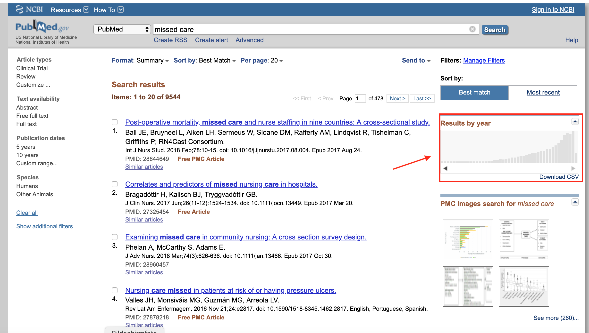
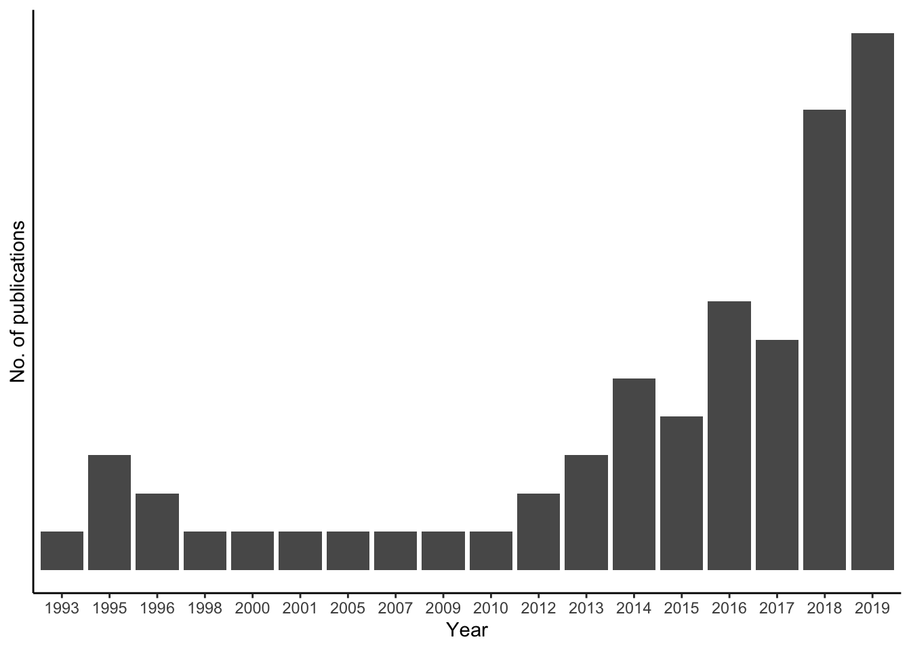

# load necessary packages
library(tidyverse)
library(RISmed)What is this post about?
For my master’s thesis (stay tuned 😎) I came at a point where I was interested in having a closer look at publication meta data (e.g. publications per year)
PubMed usually does provide this service when you execute your search, for some reason it failed for my query
Being taught basic statistics I was determined to find a way to create the image myself… and came across the amazing RISmed-📦
➡️ This blog post highlights how I used the RISmed package and gives short code examples
Introduction - what were the problems I faced?
The topic of my master’s thesis - unfinished / missed / rationed nursing care - is an important topic in health services research with growing numbers of publications over the last years. Altough I did not have to use R extensively during my thesis, in one specific case I greatly profited from it:
Usually, PubMed provides a small graphical display of the yearly publication count on each query as shown in the image below:

For some reason it failed for my exact search query. This was especially bad because I had to make a somehow valid statement that the publication numbers were increasing over the last years. If I only could get all meta data (i.e. years) from my query (~900) into a spreadsheet…1
At some point I realized that the PubMed database should be accessible and I was sure that R has a solution to it - that’s how I found the RISmed-package.
RISmed package
In short: the RISmed package provides functions to extract bibliographic information from
the NCBI databases. In other words: you can extract the information from PubMed through R code - exactly what I needed!
How to use RISmed?
First you need to install install.packages("RISmed") or load the package:
Then you specify the search_topic and search_query:
# build the search topic
search_topic <- 'missed care [TI] OR implicit rationing [TI] OR unfinished care [TI]'
# the EUtilsSummary()-function gets information on your search results
# (maximum results set as 1000, years between 1980 and 2019)
search_query <- EUtilsSummary(search_topic, retmax=1000, mindate=1980,maxdate=2019)Warning in any(is.na(WhichArgs)) || sapply(WhichArgs, length) > 1: 'length(x) =
3 > 1' in coercion to 'logical(1)'summary() and QueryId get you quick overview of your results:
# Printing the summary displays the actual results that are available
summary(search_query)Query:
("missed care"[Title] OR "implicit rationing"[Title] OR "unfinished care"[Title]) AND 1980/01/01:2019/12/31[Date - Entry]
Result count: 66# see the PMIIDs of our returned query
QueryId(search_query) [1] "31883182" "31850645" "31845542" "31773131" "31680364" "31596988"
[7] "31583822" "31529752" "31334567" "31305955" "30937945" "30866129"
[13] "30686577" "30681485" "30589706" "30475323" "30303195" "30303194"
[19] "30303193" "30145041" "30095046" "29791753" "29655017" "29569380"
[25] "29554590" "29471742" "29281908" "28978300" "28971888" "28960457"
[31] "28844649" "28599196" "27556651" "27492884" "27322941" "27292861"
[37] "27234155" "29718634" "26947419" "26259338" "26032730" "25794946"
[43] "25563066" "25430513" "24681453" "24681452" "24481345" "24397252"
[49] "24248553" "23991529" "23334645" "23084600" "22674763" "20661063"
[55] "19590471" "18055900" "16323493" "11467274" "10862990" "9694173"
[61] "10173241" "8611380" "7549650" "7549649" "7795458" "8332926" If you think your query gets you a reasonable number of results you can then further information on your records (i.e. dowloading the information):
# get the actual data from PubMed and store them in an object called records
records <- EUtilsGet(search_query, type = "efetch", db = "pubmed")
# check what kind of object "records" is
class(records)[1] "Medline"
attr(,"package")
[1] "RISmed"For creating your final dataframe to analyse the data, you need to extract information as requested. You can choose either dataframe or list to store the results. Careful: If you extract Author() you need to choose list, otherwise the variable is dropped.
# store it in either list or dataframe (Author() returns a list, therefore
# list chosen here)
pubmed_data_list <- list('Title' = ArticleTitle(records),
'Authors' = Author(records),
'Year' = YearPubmed(records),
'Journal' = Title(records),
'PublicationType' = PublicationType(records),
'Language' = Language(records))
# version without Authors for dataframe
pubmed_data <- data.frame('Title' = ArticleTitle(records),
'Year' = YearPubmed(records),
'Journal' = Title(records),
'Language' = Language(records))Finally, I could visually explore the year count:
# plot the yearcount
ggplot(pubmed_data, aes(x = factor(Year))) +
geom_bar() +
scale_y_discrete() +
labs(x = "Year",
y = "No. of publications") +
theme_classic()
How could my thesis profit from the RISmed package?
The figure I created2 helped me visualize meta information on the publications: I could clearly see that the topic unfinished nursing care has been mentioned with increasing tendency in publications. This gave me valid data for accepting my assumption.
Due to the nature of my thesis, I (sadly) didn’t have to use the exact numbers. Yet, I still learned two useful things 💡:
Using bibliographic information to inform your research may be helpful and should not be forgotten.
I felt like I reached a whole new level of R’s numerous capabilities: Using an R package to connect to a web-database should not be the end of my discoveries 😃
Notes on this post:
Be careful with the search query - there can be differences in using different codes, see here: https://stackoverflow.com/questions/32994991/r-package-rismed-different-results-using-the-eutilsget-or-summary-function
Dowloading information from PubMed (
EUtilsGet()) can take a whileI had some trouble with long search terms (no further explanation found)
Other resources I used
- https://datascienceplus.com/search-pubmed-with-rismed/
- https://www.r-bloggers.com/how-to-search-pubmed-with-rismed-package-in-r/
- https://www.rdocumentation.org/packages/RISmed/versions/2.1.4
Footnotes
Actually, PubMed does provide this service in a user friendly way: Execute your search query, choose the results you want, then go to Send to -> File and you get a .csv-file.
But hey, who does it this way when you can extract it with an R package?↩︎(not the figure above, as the sample string I used in this post was not as comprehensive as the full search string used in my thesis)↩︎